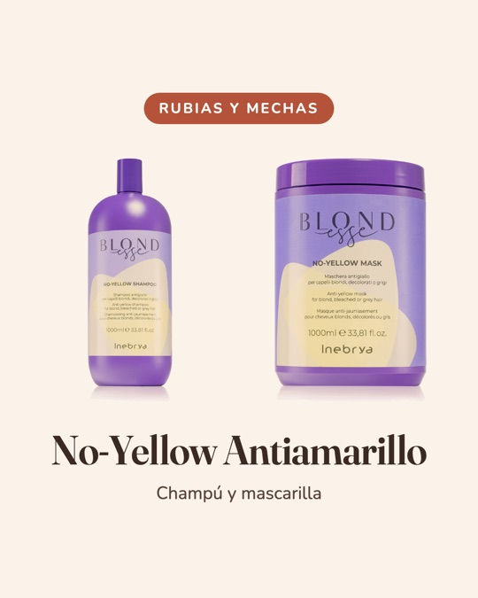
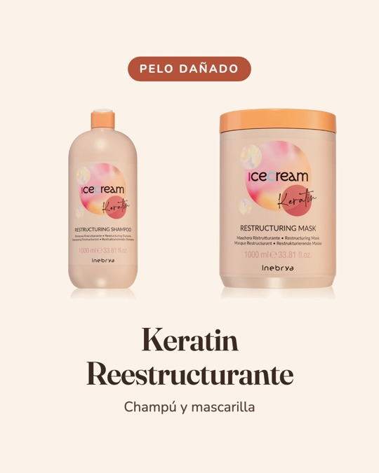
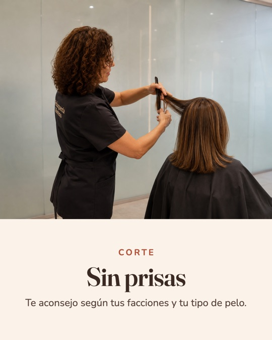
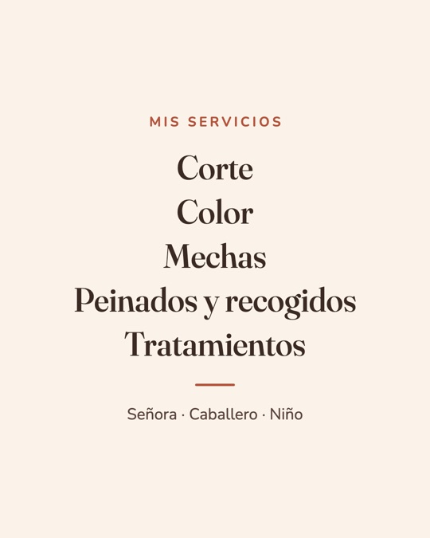
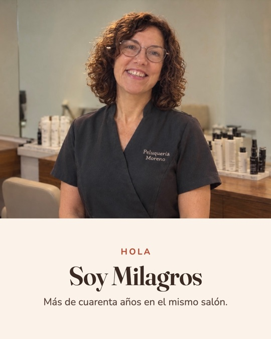
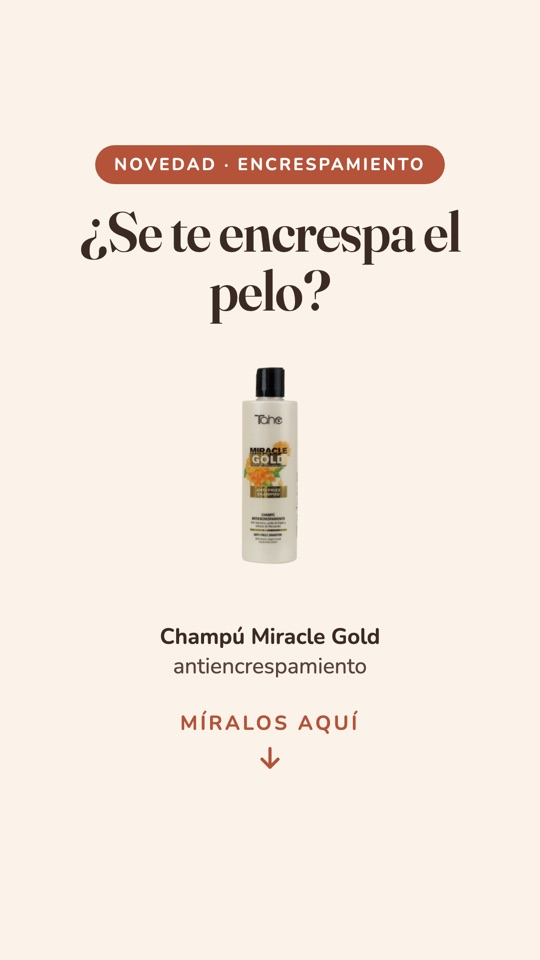
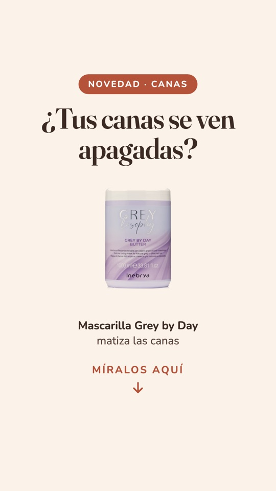
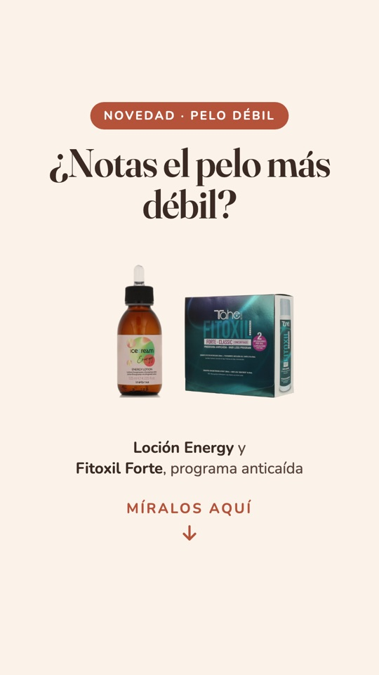
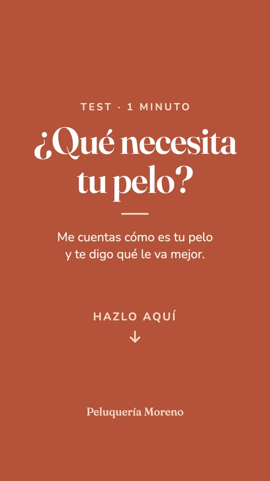

Peluquería Moreno
A website, a hair quiz and an Instagram account that turn local searches into bookings for a hair salon in Valencia, Spain, measured from the first month.
The brief
Milagros, the owner, has run her salon for more than four decades and has a loyal clientele and a 4.7 rating on Google, but no website. New customers searching for a hairdresser nearby had nowhere to see what she offers or how to book.
She needed something simple that works for her: no booking software to learn, no online shop to manage, and a tone that sounds like her.
The approach
I treated it as a marketing problem first and a design problem second. The site has one job: get a visitor to send a WhatsApp message or call. Everything on the page either builds trust or makes that step easier.
The copy is written in first person, in Milagros's own voice, because customers are choosing a person, not a brand.
-
One clear conversion goal
WhatsApp is how her customers already talk to her, so it is the primary action everywhere: in the sticky header, the hero, the services section and the footer. A phone number sits beside it for those who prefer to call.
-
Trust before the ask
Real Google reviews, the “+40 years” seal and a personal story do the persuading. The rating and number of reviews link straight to Google so visitors can check them.
-
Selling products without a shop
The salon's retail products are presented like a small catalogue. Each one opens WhatsApp with a pre-written message naming the product, giving her e-commerce style enquiries with nothing to maintain.
-
Built to be measured
Every button is tracked as its own event by position (header, hero, services, each product, contact) with Umami, a cookieless analytics tool, so we can see which sections actually drive enquiries and improve from there.
-
Easy to find, good to share
Its own domain, descriptive titles, address, opening hours, an embedded map and semantic HTML to support her Google Business profile, plus a branded preview card when the link is shared on WhatsApp or social media.
-
Mobile first, accessible, compliant
Designed for phones first and adapted to tablet and desktop. Large text, strong contrast, keyboard-friendly carousels that respect reduced-motion settings, plus legal, privacy and cookie pages.
Beyond the website
Instagram and the salon's online presence
A website is only one of the places customers look. I also set up and now run the rest of the salon's presence online, so everything speaks with the same voice.
-
Instagram, managed end to end
I created the salon's account, @peluqueriamorenovlc, launched in October 2026, and I manage all of it: photos, captions, content planning, stories and replies to messages.
-
Web and social working together
The quiz gives the account a steady source of content: each customer who posts their result and tags the salon introduces it to new people nearby.
-
A professional point of contact
I set up a dedicated business email for the salon, shown on the site and its legal pages, so enquiries have a proper home alongside WhatsApp and phone.
Nine launch posts, planned as one grid
The first nine posts were designed together, in the owner's voice and in the same colours and type as the website. Each one has a clear job: who she is, what she offers, where to find her, why to trust her, the quiz and the products.









-
Who she is
Milagros introduces herself, her 40+ years in the same salon and how she works, because customers are choosing a person.
-
Practical information
Services, address and opening hours, each ending with how to book on WhatsApp or by phone.
-
Trust
A real Google review and the 4.7 rating, with an invitation to leave one.
-
The quiz and the products
The quiz sits in the link in bio, and the best-selling products are each tied to one hair need.
Stories that sell
A series of six product stories, one per hair problem. Each opens with the question a customer would ask, shows the product that solves it and links to the website's product list already filtered for that problem, where the enquiry goes to WhatsApp. Reviews and the quiz live in the highlights.
 Curls
Curls
Frizz Blondes
Blondes
Grey hair Shine
Shine
Weak hair Reviews
Reviews
Quiz